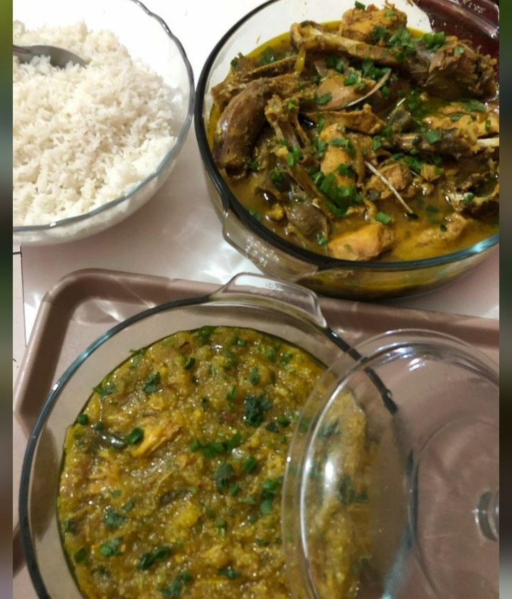
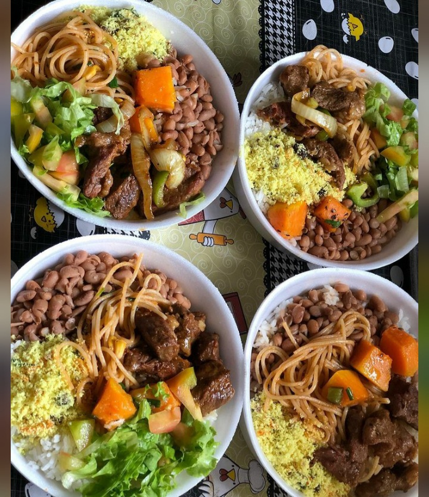
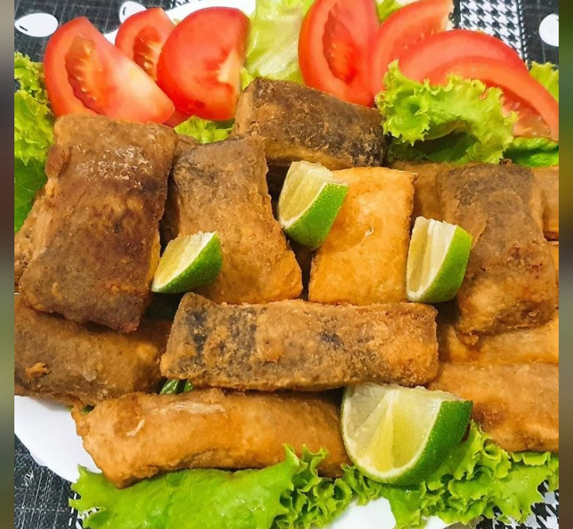
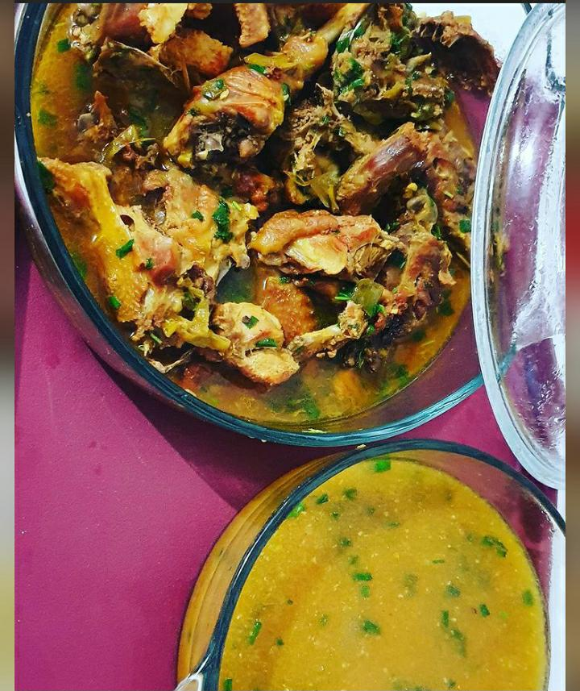
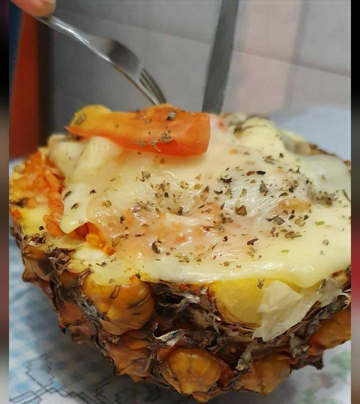
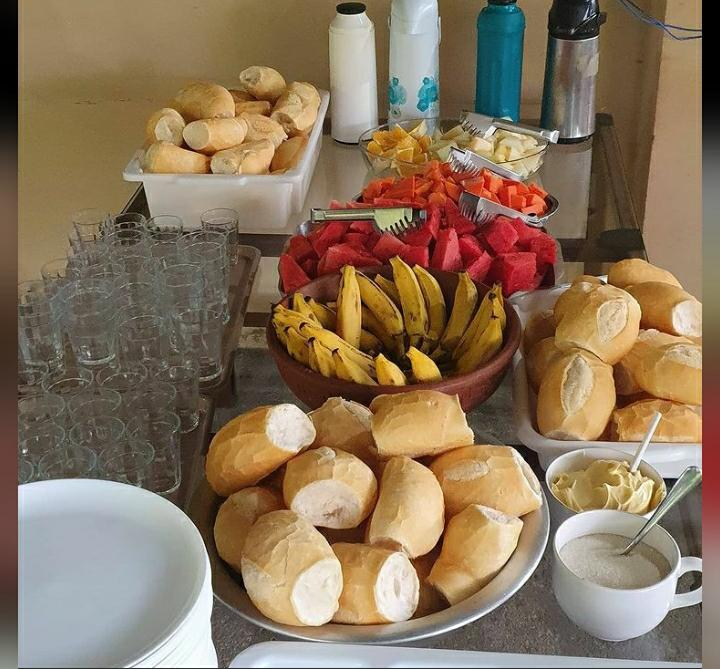
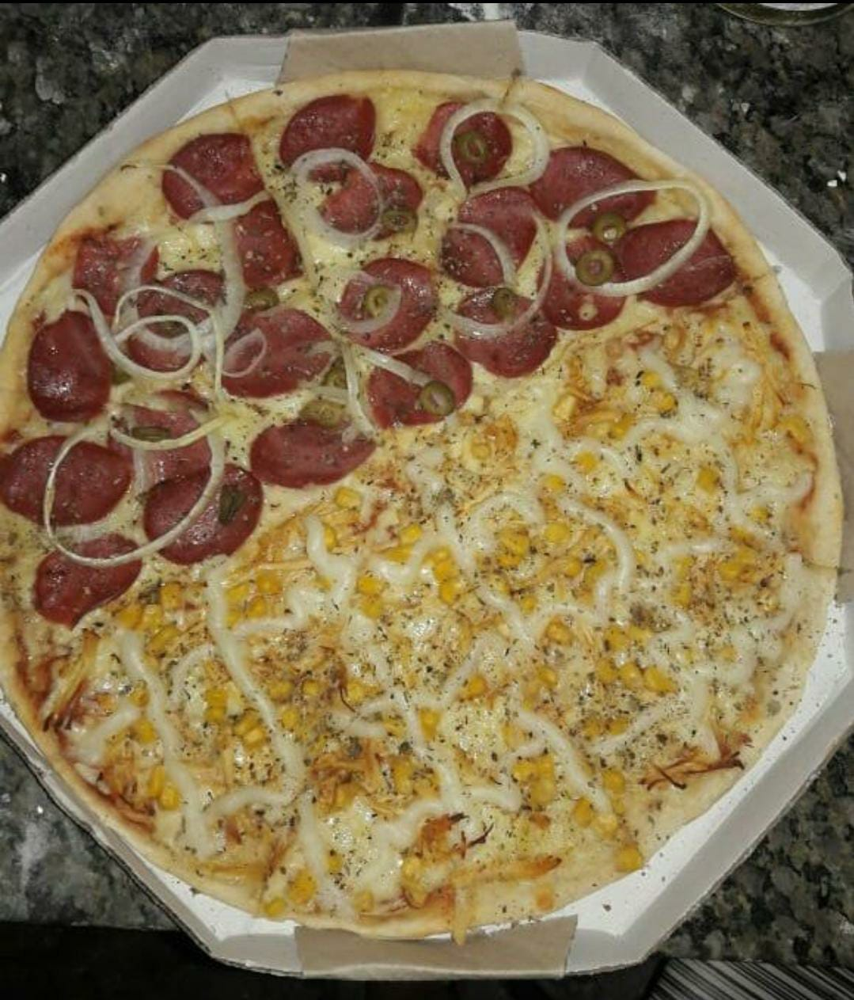
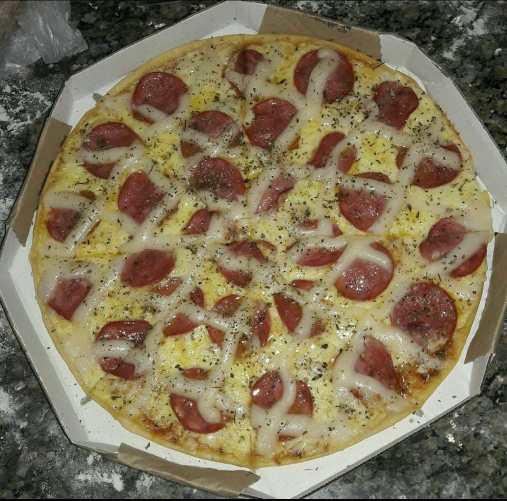
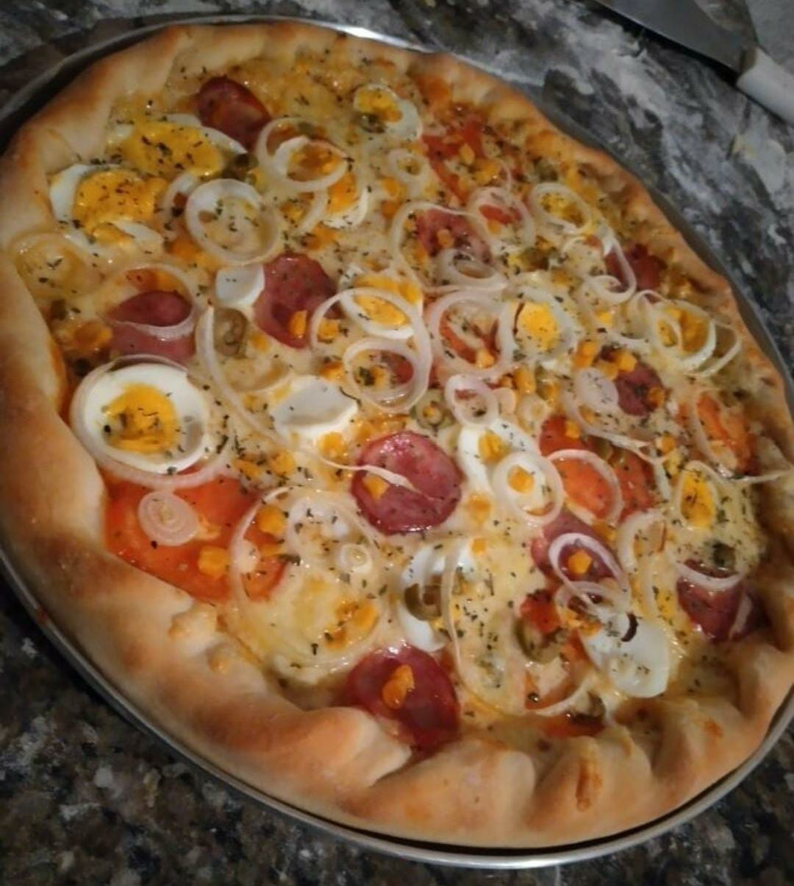

Bebias em geral, porções e muito mais Localizado em frente a praça da Liberdade - Centro, Rio da Conceição-TO
Imagens de alguns pratos servidos abaixo:
  Localizado na rua Ipê - Centro, Rio da Conceição-TO
Imagens de alguns pratos servidos abaixo:
  Pizzas, sucos, refrigerentes, bebidas alcoólicas e PF por encomenda. Localiza-se na Avenida Tocantins - Centro, Rio da Conceição-TO
Imagens de alguns pratos servidos abaixo:
  Pizzas, sanduíches e refrigerentes. Localiza-se na rua Mariana Reis - Centro, Rio da Conceição-TO
Imagens de alguns pratos servidos abaixo: